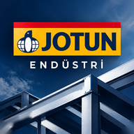

Hoş geldiniz
Adet teneke sayısıdır. Ambalaj fiyatını ve yoğunluğu (kg/L, teneke etiketinde yazar) bir kez girin; sonraki tekliflerde hatırlanır.
| Ürün | Ambalaj | Adet | Toplam L | kg/L | Toplam kg | Ambalaj fiyatı | Tutar |
|---|
Teklifi müşteriye iletmeden önce bölge yöneticinizin onayını alınız.
Sarfiyat bu değerlerle hesaplanır. Güncel TDS'ye göre değiştirebilirsiniz; değişiklik yalnızca bu tarayıcıda saklanır.
| Ürün | Tip | Katı madde % | Kaynak |
|---|
Sistemler ISO 12944-5:2019 Ek C (karbon çelik) ve Ek D (galvaniz) tablolarındaki astar KFK aralığı, kat sayısı ve minimum toplam KFK’ya göre kurulmuştur; ürün dağılımı örnektir. Teorik sarfiyat = katı madde % × 10 / KFK (m²/L). Ölçülen tek KFK değeri nominalin 3 katını geçmemelidir (ISO 12944-5 §7.3). Nihai sistem, ara kat bekleme süreleri ve renk seçimi için ilgili TDS'ye ve Jotun teknik ekibine danışın.
Rakip ürünün etiketi, teknik föyü veya rakip teklifi elinizdeyse fotoğrafını çekip bölümüne yükleyin; yazıları okuyup Jotun karşılığını çıkarır.
Ürün tipine göre eşleştir
Rakip sistemin her katının tipini ve kalınlığını seçin; aynı tipteki Jotun ürünü ve litre çıkar.
| Rakip kat tipi | µm | Jotun karşılığı | Litre |
|---|
Rakip ürün etiketi, rakip teklifi, şartname (PDF) veya yüzey fotoğrafı ekleyin. Fotoğraftaki yazılar okunur.
Bilgilendirme amaçlıdır. Uygulamadan önce ürünün TDS'ini kontrol edin; tank içi, kimyasal ve yangın işlerinde Jotun teknik onayı alın.
Teknik bilgiler (katı madde, karışım oranı, inceltici, ambalaj) Jotun Deniz & Endüstri ürün teknik verilerinden (Nisan 2026) alınmıştır. “Liste dışı” ürünler standart bayi stok listesinde yoktur; minimum sipariş ve teslim süresi için Jotun'a danışın. Uygulamadan önce ürünün güncel teknik föyünü (TDS) kontrol edin.
